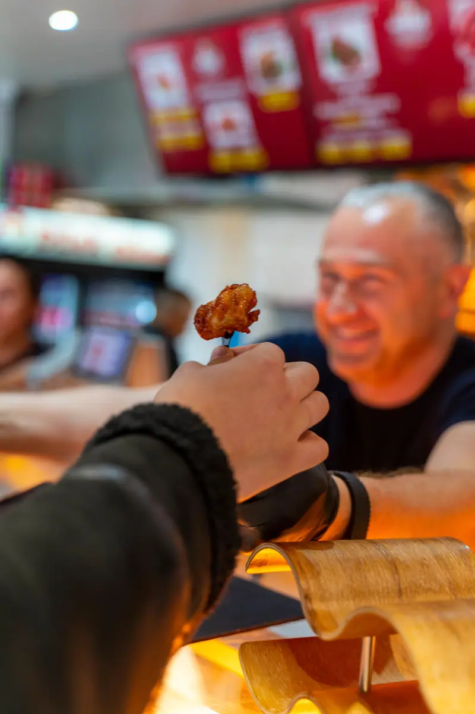
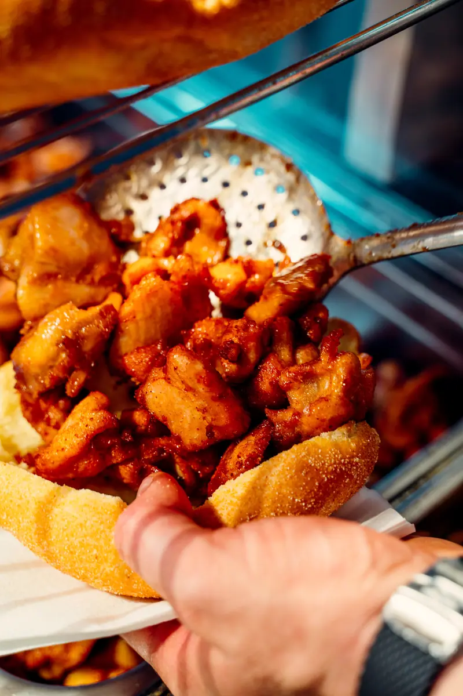
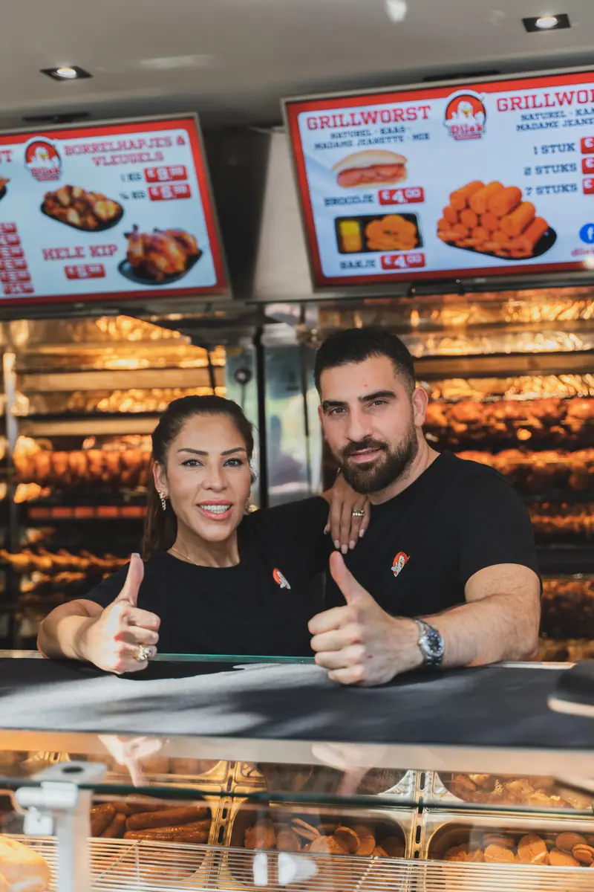
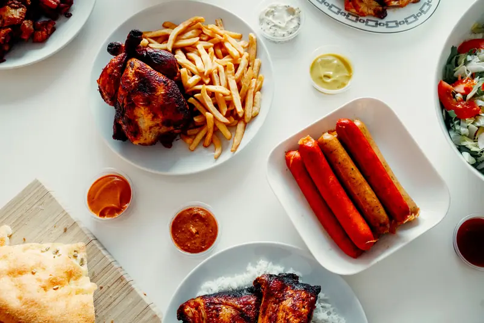

Osdorp
1069 BC Amsterdam
- Maandag t/m zondag
- 10:30 – 20:00
OsdorpWestpoortHaarlem
Hele kippen, kippenbouten, kipvingers en grillworst. Gegrild met onze eigen kruidenmix, 100% halal, sinds 2014.

Van het spit

Locaties & openingstijden
Twee keer in Amsterdam, één keer in Haarlem. Elke dag open. Loop binnen, proef en kies je saus.


Van de grill
Alles wordt elke dag vers bereid. Meenemen of ter plekke opeten, in een broodje of in een bakje.

€ 11,99
Vers van het spit, met onze kruidenmix.

€ 14,99 per kilo
Per kilo, krokant vel, sappig vanbinnen.

€ 6,99
Naturel, pittig of mix. Altijd warm.

€ 12,99
Goudbruin en krokant. Om te delen (of niet).

€ 5,49
Naturel, kaas of madame jeanette.

€ 4,49
Geroosterd, per bakje. Hoort erbij.
Ook borrelhapjes, kipsalon en grotere porties per halve of hele kilo.
Het hele menuZo gaat het bij Dilek
Geen haast, geen nummertjes. Gewoon de toonbank, de grill en een saus naar keuze.

Twijfel je nog? Vaak krijg je aan de toonbank alvast een stukje grillworst om te proeven.

Kipvingers, grillworst of hotdog: alles kan in een vers broodje of in een bakje.

Naturel, pittig of mix. Je sausjes vul je zelf, precies zoals jij het lekker vindt.

Ons verhaal
Toen we in 2014 begonnen, hadden we één missie: de beste gegrilde kip van Amsterdam maken. Alleen verse kip, onze familiekruidenmix en liefde voor het vak.
Inmiddels staan we in Osdorp, Westpoort en Haarlem. Het recept is niet veranderd.
Mensen komen van over heel Amsterdam naar ons toe. Niet omdat we de goedkoopste zijn, maar omdat je het verschil proeft vanaf de eerste hap.
2014Eerste spit aan
100%Halal
3Locaties
7/7Dagen open
Klantreviews
Heerlijke broodjes. Lekker warm. Vriendelijke personeel. Vriendelijke eigenaar. Altijd voor je bestelling een heerlijke stukje worst die je alvast kan proeven. En verschillende sausjes die je zelf kan vullen. Raad iedereen aan.
We hebben hier een heerlijk broodje kip gegeten. De aardappeltjes erbij gekregen. Dank U wel mevrouw. Snelle bediening, fijn zitje.
Mostly about Chicken dishes. All very tasty as well as the combination of have-yourself sauces. The staff are nice and sometimes they give you some tester from different menu.
Catering
Verjaardag, bedrijfsfeest of gewoon een volle tafel. Pakketten voor 10 tot 50 personen, vanaf € 199,99.
